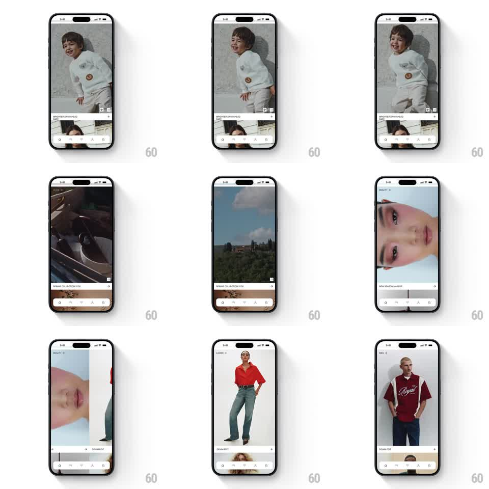

Media
Frame-by-frame

Rebuild this interaction 1:1: H&M's full-bleed campaign header - edge-to-edge fashion imagery you swipe through horizontally, with the campaign title + arrow chip crossfading in sync and the next image sliding over the current one like stacked prints.

Rebuild this interaction 1:1: H&M's full-bleed campaign header - edge-to-edge fashion imagery you swipe through horizontally, with the campaign title + arrow chip crossfading in sync and the next image sliding over the current one like stacked prints.
## Integration
Integration: stack-agnostic spec - springs given as stiffness/damping, timed motions as duration + curve; map every value to your framework and animation library of choice.
## Scene
Fashion app home: full-bleed hero image filling the upper ~80% of the screen, category label + campaign name ("BRIGHTER DAYS AHEAD", "SPRING COLLECTION 2026") bottom-left with a small arrow button, tab bar below. Each campaign is a different full-bleed photo or video still.
## Motion spec
Pattern: gesture-driven cover swipe.
- Horizontal drag: the incoming image slides in from the drag direction, covering the current one (1:1 tracking); the outgoing image stays put, dimming ~15% as it's covered.
- Title block: current title slides down + fades (150ms), incoming title slides up + fades (150ms) at the swipe's 50% crossing - not after settle.
- Release: snap to nearest image (spring ~300/25); velocity flings skip one image max.
- A subtle parallax: the covering image's content shifts at 0.95x its container speed.
## Calibration
- The cover metaphor (new slides over old) is the identity - no side-by-side carousel gap.
- Title swap is progress-driven, mid-swipe.
## Reduced motion
Crossfade between images (250ms) on release.
## Don't miss
- Outgoing image dims as it's covered - depth cue.
- The arrow chip stays fixed while titles swap under it.